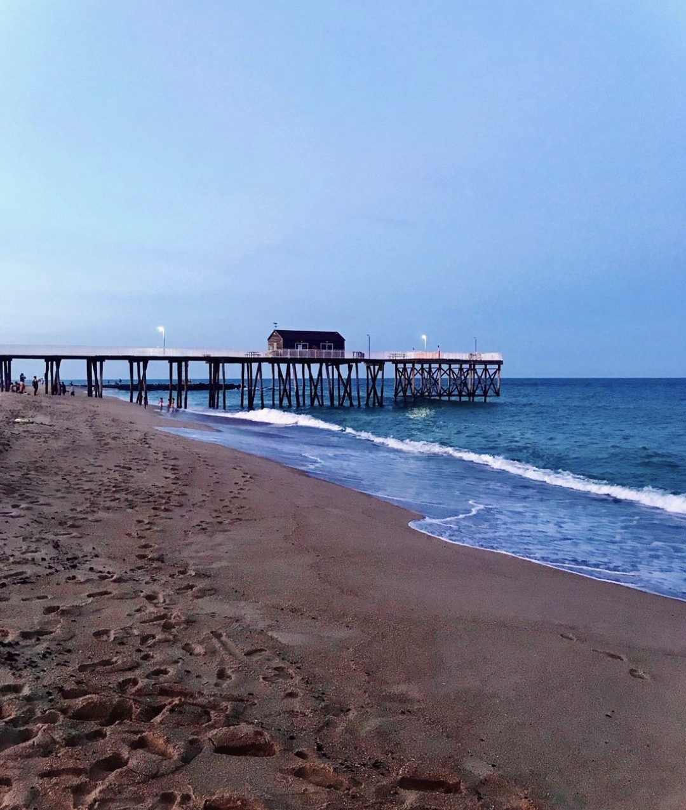
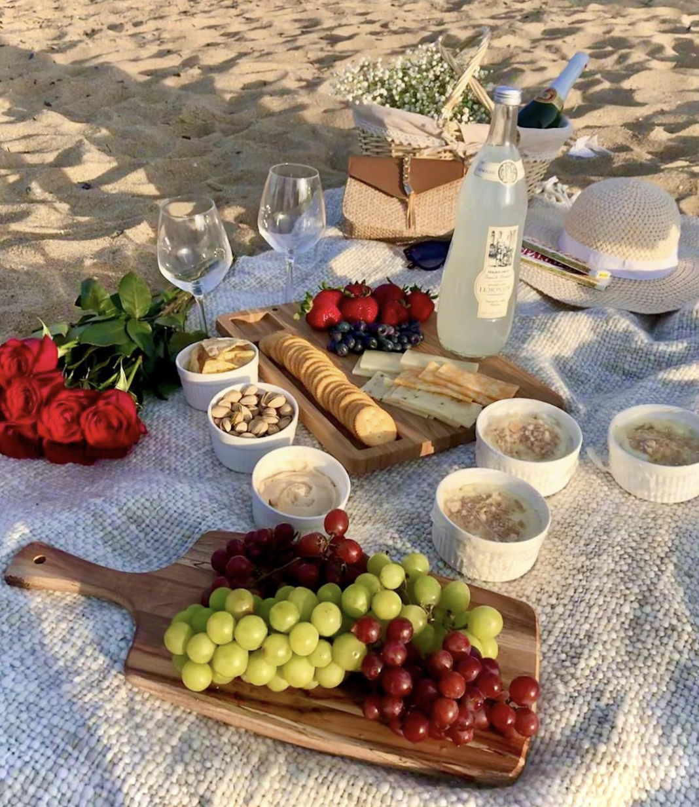

On this page you will find a few of my favorite pictures that I have captured.
Location: Belmar Beach, New Jersey
Summer Beach Picnic
Cherry Blossoms

I love doing photography. Photography is one of my favorite hobbies. I own a Canon EOS 90D DSLR and purchased it just for photography. I believe in living in the moment and thus I like to capture all my special moments with my DSLR. I soon will start to print out all my photography and insert it into a scrapbook/photo album to show future generations in my family. On this page you will find a few pictures of special moments that I have captured using a iPhone 12 Pro Max. I plan to soon start taking pictures with my new DSLR once I get the chance to start travelling again!